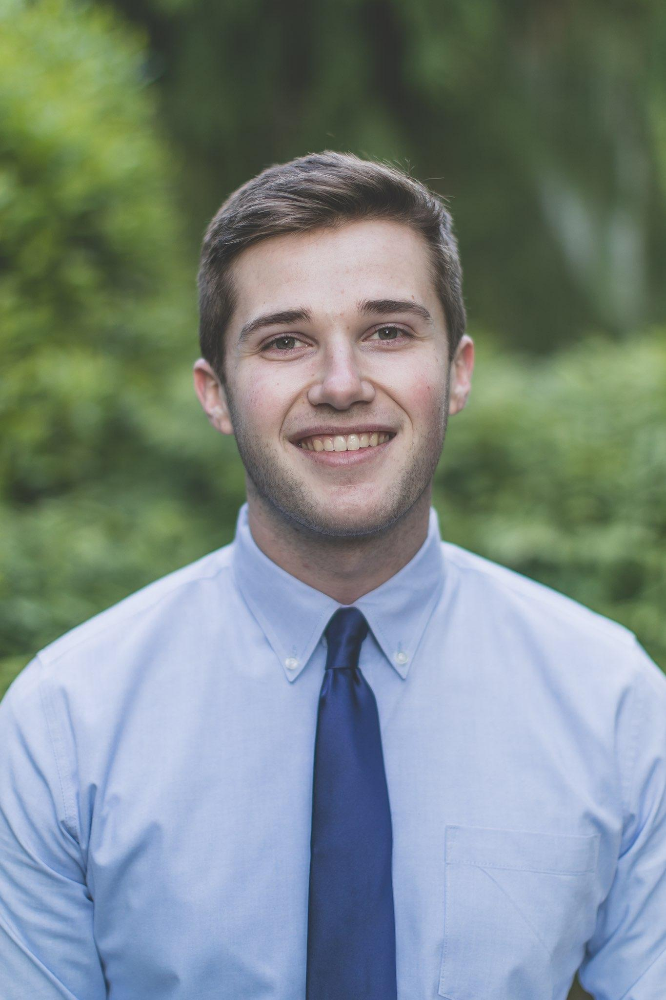

My Resume
Ryan Cresap
Bachelor of Science in Computer Engineering
Covington, WA · (509) 885-6034

Work Experience
Product Support Engineer, Fluke Biomedical (Aug 2022 - Current)
- Execute verification procedures to test hardware/firmware product release candidates.
- Record and organize large amounts of test data during verification using Excel/Teams.
- Reduce testing duration by implementing Python test scripts.
- Assist in writing and revising FDA regulated verification test plans for a variety of products.
- Perform analysis on root-cause data gathered during troubleshooting.
IT Assistant, Calalyst Workspace Activation (Feb 2022 - May 2022)
- Assisted the head of IT with installing, configuring, and maintaining computers on the company’s network.
- Designed Visual Basic code for company-wide Excel sheets to ensure data updated properly and was in the correct format.
Education
Computer Engineering (BS), Seattle Pacific University, 3.33 GPA, 2018-2022
Senior Design
- Designed remote activated door system with two stepper motors driving a rail system.
- Modified and tested thermal camera system. The battery-powered system was mounted on a drone, outputting to a range of 100 ft.
- Managed team budget.
- Mentored a junior design team, revised design plans and specifications.
Relevant Coursework
- Electronics I/II
- Applications Programming
- Data Structures I/II
- Advanced Computer Architecture
- Operating Systems Programming
Skills
- C++ and Python
- Microcontrollers (Raspberry Pi, Arduino)
- Soldering
- Oscilloscopes, function generators, multimeters, calibrators, and electrical safety analyzers
- Linux using Docker